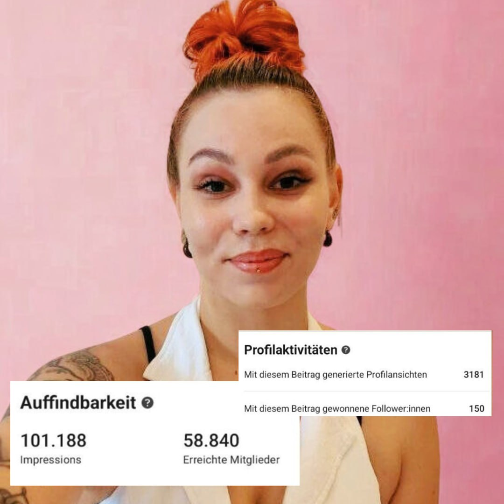
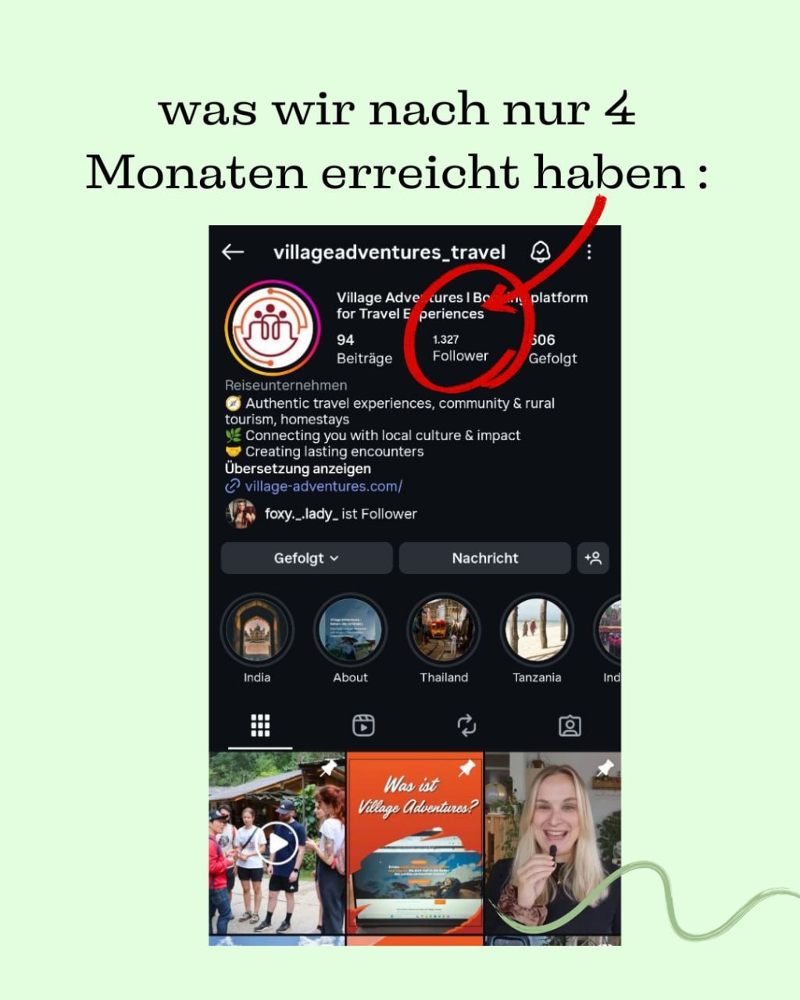

Visuelle Idee mit klarem ersten Eindruck.
Hook, Gestaltung und Markenstimme werden als ein Content-Piece gedacht.
Echter Social-Media-Content. Echte Performance. Echte Ergebnisse. Wir zeigen nicht nur, was gut aussieht – sondern was Menschen stoppt, bewegt und zur Handlung bringt.
Eine kuratierte Auswahl aus Social Content und Kundenprojekten. Die Darstellung ist bereits für echte Instagram-Reel-Embeds vorbereitet – inklusive Performance-Kontext statt bloßer hübscher Screenshots.
 IG▶
IG▶Hook, Gestaltung und Markenstimme werden als ein Content-Piece gedacht.
 IG▶
IG▶Native Formate, starke Bildsprache und ein klarer Grund weiterzuschauen.
 IG▶
IG▶Wir bauen Inhalte rund um Fragen, Emotionen und Situationen der Zielgruppe.
 IG▶
IG▶Wiedererkennung entsteht durch System – nicht durch ein einzelnes schönes Posting.
 IG▶
IG▶Creative, Copy und Ziel werden zusammen entwickelt – damit Aufmerksamkeit Wirkung bekommt.
 IG▶
IG▶Ein starker Beitrag zahlt gleichzeitig auf Aufmerksamkeit, Vertrauen und Positionierung ein.
Die Cards sind so aufgebaut, dass ausgewählte öffentliche Instagram-Reels direkt als abspielbare Originalbeiträge eingesetzt werden können.
Der gelieferte Performance-Nachweis zeigt, wie ein einzelnes Content-Piece gleichzeitig Sichtbarkeit, Profilinteresse und Follower-Wachstum erzeugt hat.

Deshalb zeigen wir bei JJ-Media nicht nur einzelne Zahlen. Entscheidend ist, was Content für Marke, Community und Nachfrage verändert.

Authentische Reisebilder, wiedererkennbare Serien und Content, der Lust aufs Losfahren macht.
Case ansehen ↗
Storytelling, Reels, Community-Engagement und ein konsequenter Content-Mix ergeben +490 % Wachstum.
Case ansehen ↗Wir entwickeln das System hinter den Posts – von der Idee bis zur messbaren Performance.
Projekt anfragen ↗